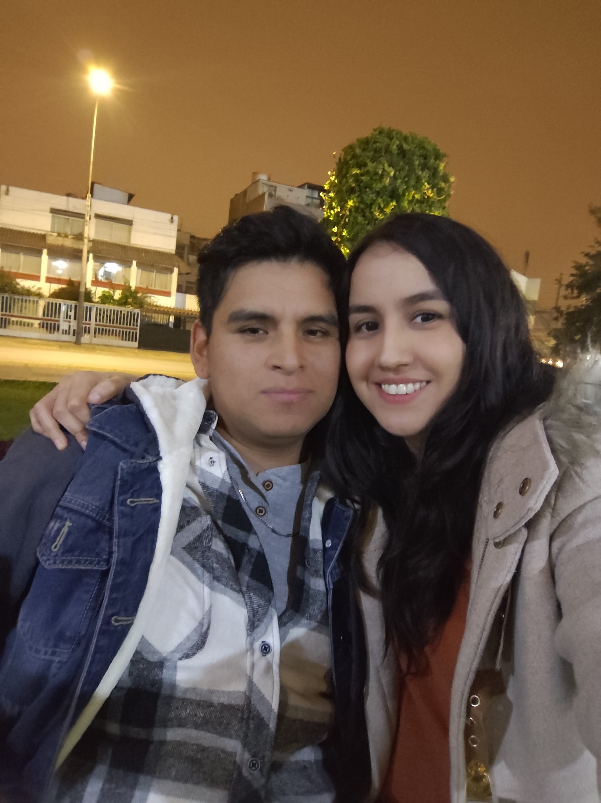
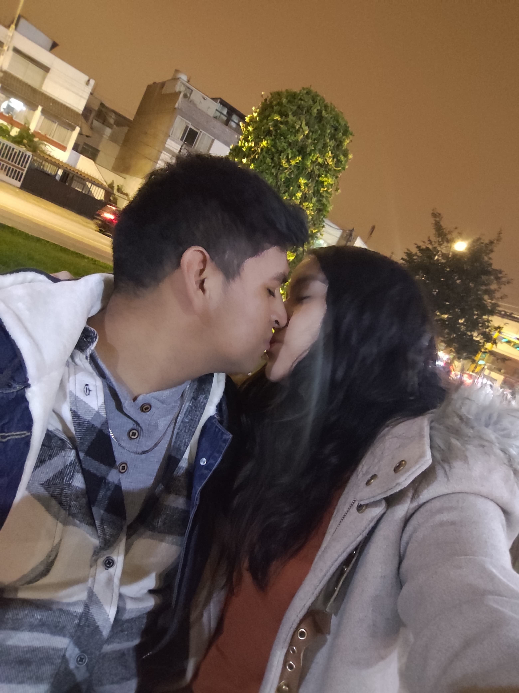
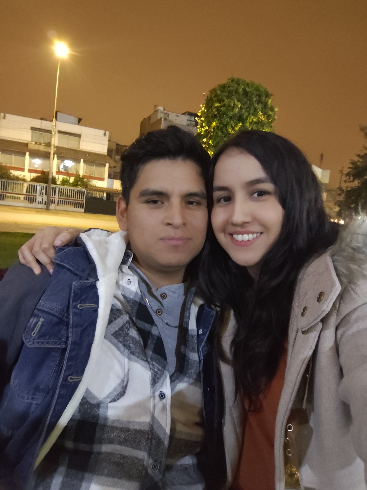
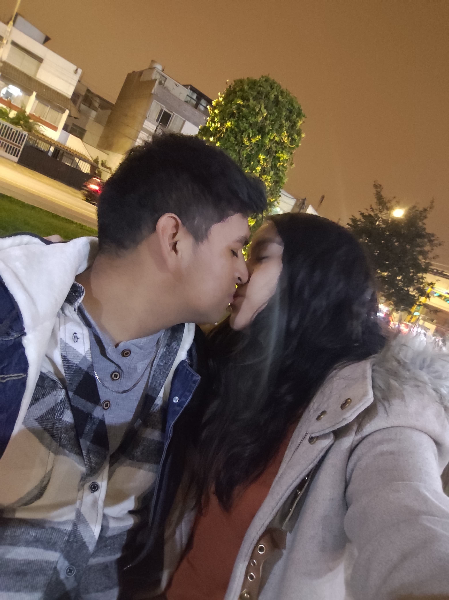
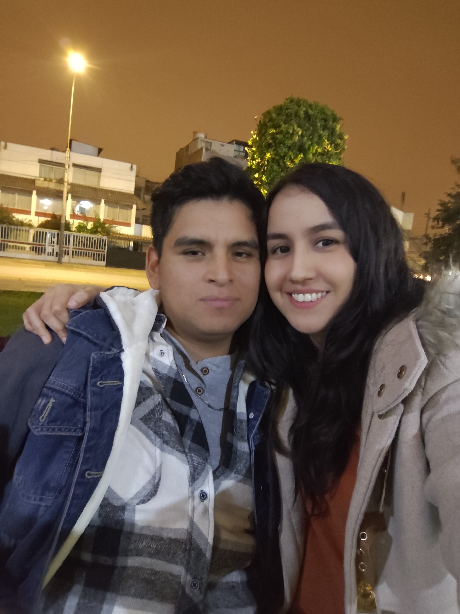
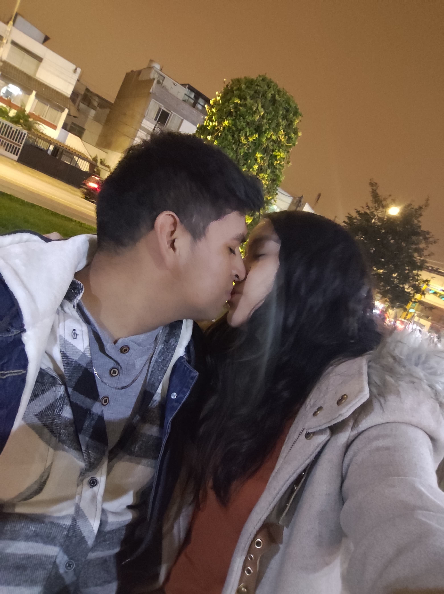

🌼 Momentos contigo

 



En esta página guardo mi sentir: y aunque parezca callado y ausente, no dejo de sentir. Si algún día dudas recuerda que eres una mujer increíble.


nose en que momento paso esto pero ahora no sabemos nada uno del otro y si te preguntas si pienso en ti .. si!! muchas veces quiero saber de ti si estas bien, si estas comiendo, si te estas cuidando, si estas sonriendo, si estas abrigandote al salir, si te fuiste a chequear y si asi fue como te fue, tantas cosas que quisiera saber de ti... si en algun momento sientes frio quiero que recuerdes mi abrazo calido sincero y que de alguna manera te reconforte aunque yo no este alli, y si no te busque no insisti no apareci por alli… no es porque no quiera sino porque aceptar tu decision y creo que tambien es mi forma de protegerme a mi mismo, quiero pensar que lo hiciste porque creiste que era lo mejor para mi y quizas en el fondo lo fue.. quizas... tal vez de seguir hubieramos terminado haciendonos daño, aceptar esto solo fue miedo a lo que podria pasar despues, porque aunque te quise mas de lo que crei, pense o senti me di cuenta que salir a buscarte seria hacerme daño y aunque el pecho me apriete por no verte, por no saber de ti.. quiero que sepas que yo sigo aqui no soy de los que se van sigo aqui en silencio agradecido con todo lo bonito que dejaste dentro de mi aunque no lo veas aunque no lo sepas sigo aqui guardando todo lo que fue porque aunque tu cortaste todo de golpe y aunque no me gusto tambien lo respeto porque se que es lo que creiste mejor para ti yo lo voy a tomar como que fue tu manera de protegerme y te lo agradezco solo quiero que estes tranquila feliz con esa sonrisa tan linda que siempre me gusto y si algun dia llegas a leer esto solo quiero que sepas que yo nunca me fui siempre estuve aqui aunque ya no me veas